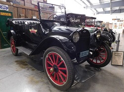
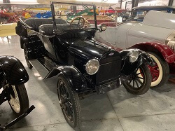
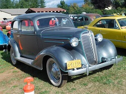
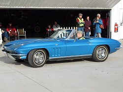

Chevrolet Collection
Chevrolet Automobile Collection
1918 Chevrolet Model 490 Touring Car Elton
Year: 1918
Donor: Albert Elton
Engine: 4 Cyl.
Transmission: Manual (3 speed)
Number of Doors: 4
Curb Weight in Lbs: 2,000
This car was often a familiar sight in The Dalles as a fun sunny day driver for the Elton family. Albert Elton bought this car from another local family, the Forrest family, who had the car restored a number of years ago. The car was just as old as he was. It has been on display at WAAAM since 2011 and was donated in 2016 in memory of Albert's passing. There are just under 75,000 original miles on this vehicle.
1918 Chevorlet Model 490 Touring Car Alpenrose Dairy
Year: 1918
Donor: Alpenrose Dairy
Engine: 4 Cyl.
Transmission: Manual (3 speed), approx 26 HP
Number of Doors: 4
Curb Weight in Lbs: 2,000
The Chevrolet Model 490 was the company's response to the growing popularity of Ford's Model T. In 1918 Chevrolet merged with the General Motors group and was able to leverage itself into the third highest selling manufacturer in the U.S. that year.
1927 Chevrolet "Outlaw" Dirt Track Racer
 Year: 1927
Year: 1927
Donor: Gene & Bonnie Wright
Engine: 4 Cyl.
Transmission: Manual (3 speed)
Number of Doors: open
Curb Weight in Lbs: approx. 1,200
This automobile was reconstructed by WAAAM volunteer Gene Wright from 2004 to 2007 based on photos of the original dirt track racers of the era. Many of these photos can be found in books like "Outlaw Sprint Car Racer" by John Gerber and other publications. These cars raced at country fairs, early raceways, and beach tracks around the country.
1931 Chevrolet 4-door Phaeton
Year: 1931
Donor: Bill and Mina Clough
Engine: 6 Cyl.
Transmission: Manual (3 speed)
Number of Doors: 4
Curb Weight in Lbs: approx. 2,900
Despite the continuing ramifications of the Great Depression, Chevy's recently redesigned engine and corresponding vehicles managed to maintain the company's sales of all their vehicles. This particular model - the 4 door version of the Phaeton - was the rarest model in the 1931 line with only 852 produced.
1931 Chevorlet Model AE 2-door Sedan
 Year: 1931
Year: 1931
Donor: Phil & Judy Jensen
Engine: 6 Cyl.
Transmission: Manual (3 speed)
Number of Doors: 2
Curb Weight in Lbs: approx. 2,400
As Chevy's 8th millionth rolled off the assembly line and despite still reeling from the effects of the Great Depression, Chevy slashed their prices on all body styles for the 1931 season. As a sales strategy, this proved wildly popular with consumers and enabled Chevy to overtake Ford as the number one car manufacturer and roll out their 8th millionth automobile.
WAAAM's 1931 Chevy Model AE is the 2-Door variant. The much more expensive 4-Door version was almost double as popular despite the price.
1931 Chevorlet Model AE 4-door Sedan
 Year: 1931
Year: 1931
Donor: Michael Willaston
Engine: 6 Cyl.
Transmission: Manual (3 speed), approx 50 HP
Number of Doors: 4
Curb Weight in Lbs: approx 2700
As Chevy's 8th millionth rolled off the assembly line and despite still reeling from the effects of the Great Depression, Chevy slashed their prices on all body styles for the 1931 season. As a sales strategy, this proved wildly popular with consumers and enabled Chevy to overtake Ford as the number one car manufacturer and roll out their 8th millionth automobile.
This 4-Door version of the 1931 Chevy Model AE joined its 2-Door variant at the museum in 2019. Of the two, the 4-Door was much more expensive but also almost double as popular despite the price.
1936 Chevrolet 2-door Sedan
Year: 1936
Donor: Phil & Judy Jensen
Engine: 6 Cyl.
Transmission: Manual (3 speed)
Number of Doors: 2
Curb Weight in Lbs: 2,940
Much of the changes seen in the 1936 year for Chevy came under the hood. The company pushed their exclusive for the price range hydraulic breaks that provided a smooth even stop no matter how you treated the car. This particular style of vehicle most popular model in the line this year.
1941 Chevrolet Master Deluxe Business Coupe
Year: 1941
Donor: Phil & Judy Jensen
Engine: 6 Cyl.
Transmission: Manual (3 speed)
Number of Doors: 2
Curb Weight in Lbs: 3,020
Chevy's business coupe sought to blend the perfect amount of work and play. The interior was comfortable enough for passengers but the real treat for the traveling salesman was the illuminated trunk and extra space behind the seats in the cab for more luggage.
1941 Chevrolet Special Deluxe Coupe
 Year: 1941
Year: 1941
Donor: Sheryl Carey in memory of Will Carey
Engine: 6 Cyl.
Transmission: Manual (3 speed)
Number of Doors: 2
Curb Weight in Lbs: 3,050
Built with 5 in mind, this Coupe showcases all the excellence of pre-WWII automobiles in one sleek form. This particular model features the blue with subtle red accents giving it a particularly patriotic feel when we take it out during parades.
1953 Chevrolet Tank Truck
 Year: 1953
Year: 1953
Donation: Warren Bean
Engine: 6 Cyl., 235 cubic inch, approx 103 HP
Transmission: 4+2 Speed Axel
Number of Doors: 2
Curb Weight in Lbs: 4,600
GVW: 16,000
In 1953 Chevy redesigned their multi-functional transport truck launching this line of vehicles into a new era. Cabins now sported adjustable bench seats, doors featured concealed hinges, and windows were considerably larger and had extra auxiliary ventilation ports. Chevy Tank Trucks were a great early form of portable advertising with plenty of body space for promotional slogans or images. WAAAM’s body didn’t have any discernible ads so we gave a nod to the past with our logo instead. Read all about getting our sign on the car here.
1966 Chevrolet Corvette Convertible
Year: 1966
Donor: Art & Betsy Knowles
Engine: V-8
Transmission: Manual (4 speed)
Number of Doors: 2
Curb Weight in Lbs: approx. 3600
This car spend much of its life having fun racing out in the deserts of the South West. It has gone through a few body restorations but the distinct blue coloring is factory correct and the interior is still in original condition. Be on the lookout for its matching hard top shell also on display in the museum; it's usually in the back of a truck.
1966 Chevorlet Corvette Stingray Coupe
Year: 1966
Donor: Phil Judy Jensen
Engine: V-8
Transmission: Manual (4 speed)
Number of Doors: 2
Curb Weight in Lbs: 3145
This car is the perfect representation of the one that got away. It was sold to Jensen by an individual who had previously sold it and then bought it back from another individual. Jensen in turn sold this car too. It again changed hands twice in a decade before Jensen saw it for sale in a magazine, recognized it, and purchased it over the phone. Several years went by and with one too many cars in the barn Jensen donated it to a cause to be raffled off. He bought a few raffle tickets on a lark (so did the original owner that Jensen got the car from) and wound up winning the car back. Because the car kept coming back to him, he kept it until donating it to WAAAM in 2018.
The original color of this car was "sunfire yellow." It was repainted in the 1980s to "silver pearl" to match an update to the interior.
1969 Chevrolet Custom Pickup
Year: 1969
Donor: Phil & Judy Jensen
Engine: V-8
Transmission: Automatic
Number of Doors: 2
Curb Weight in Lbs: approx. 3189
This era of Chevy truck has what many consider to be one of the ultimate classic designs with the right cross between the vintage vehicles of yesteryear and the modern cars of today. This type of car is still easy to work on and is a popular choice for customizing too.